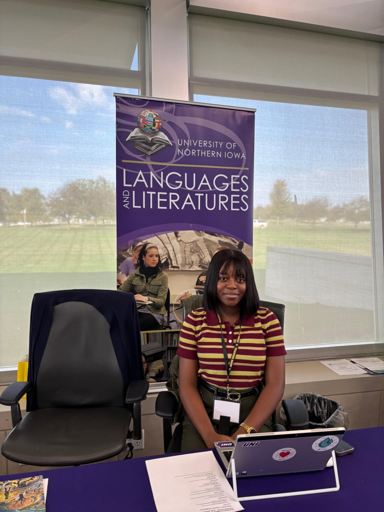
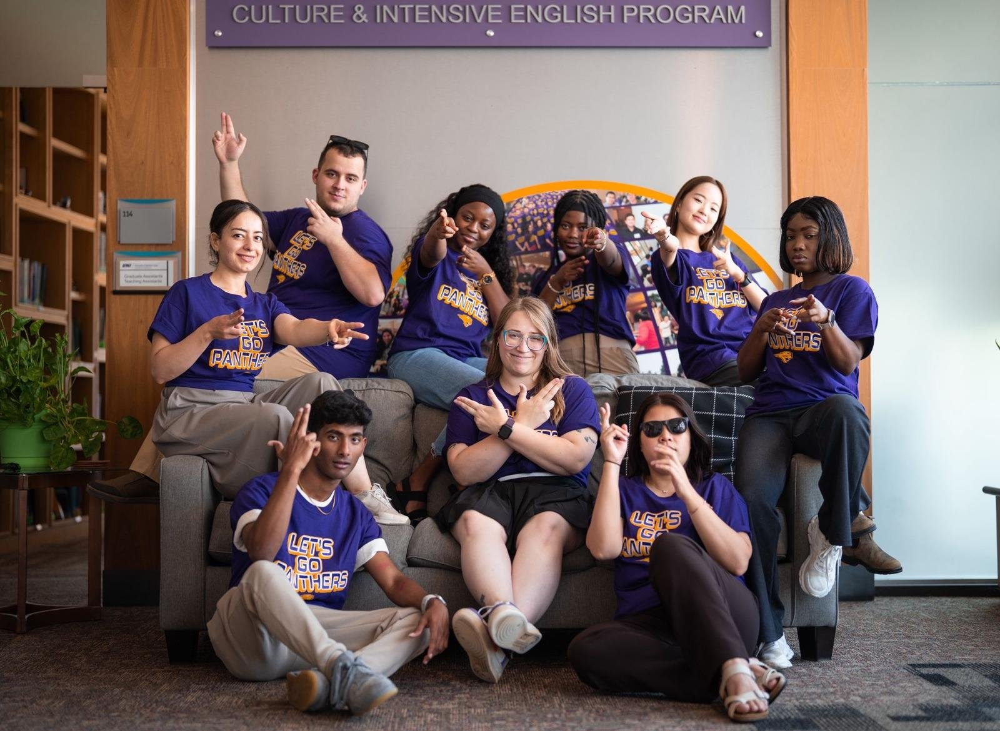

About
Hi, I'm Wemimo.
I'm an applied linguist and language educator. For more than four years, I've taught English to multilingual learners in Nigeria and the United States, from first-year college writing to adult ESL. I design the lessons, slides, and assessments I teach with.
My research looks at how people learn and use language in real life, especially second-language writing and how AI tools can support learners fairly. Outside the classroom, I lead monitoring, evaluation, and learning for the Chayil Charis Foundation in Nigeria, and I serve TESOL International Association as an elected Member-at-Large for Applied Linguistics.
Download CV4+ yearsteaching multilingual learners
2 countriesNigeria and the United States
AAAL & TESOL2027 presentations accepted


Skills
Learning Design
Curriculum and lesson designRubrics and assessmentInstructional designSlides and course materials
Language Teaching
L2 writing and feedbackPronunciationPragmaticsTranslanguagingEnglish for academic purposes
AI and Language Data
Evaluating AI writing toolsAI for lesson and course creationSocial media language analysisLIWC text analysis
Research
Study designQualitative analysisQuantitative analysisIRB/CITI certified
Tools
CanvasD2L BrightspaceBlackboardCanvaAdobeGenerative AI toolsMicrosoft 365Google WorkspaceZoom
Education
2026 to 2031 (expected)Ph.D. in English (Applied Linguistics)East Texas A&M University
2026M.A. in TESOL/Applied LinguisticsUniversity of Northern Iowa
2021B.A. in English and International StudiesOsun State University, Nigeria
CertificateInstructional Design FoundationsUniversity of Illinois Urbana-Champaign (Coursera)
Leadership and Service
Member-at-Large for Applied Linguistics (elected)TESOL International Association · 2026 to 2027
Head of Monitoring, Evaluation and Learning (volunteer)Chayil Charis Foundation, Nigeria · February 2026 to present
Global Panthers Success Representative and Involvement OfficerInternational Student Promoters, University of Northern Iowa · Fall 2025 to present
Exhibitor, MIDTESOL ConferenceCedar Rapids, Iowa · October 2025
Graduate Student VolunteerIowa Symposium on English Language Teaching (ISELT) · 2025 and 2026
Awards and Fellowships
AAAL Indigenous Language Scholarship Support Fund, American Association for Applied Linguistics, for AAAL 2027 in Atlanta
Graduate Fellowship and Global Panthers Success Scholarship, University of Northern Iowa (2025/2026)
Graduate Research Fellowship, University of Northern Iowa (2024/2025)
SLA Symposium Travel Award, University of Northern Iowa (2025)
Linguistics Association of Nigeria Conference Travel Grant (2020)
Memberships
AAAL
TESOL International Association
Linguistics Association of Nigeria
Let's work together
I'm open to collaborations in language teaching, curriculum design, and AI for language learning.
Get in Touch